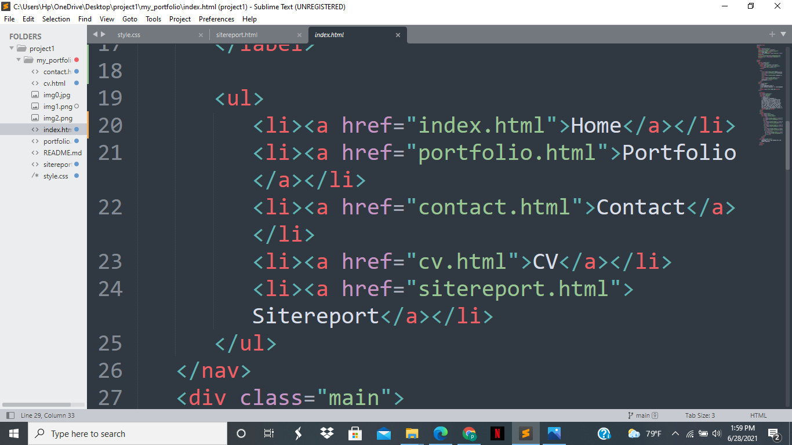
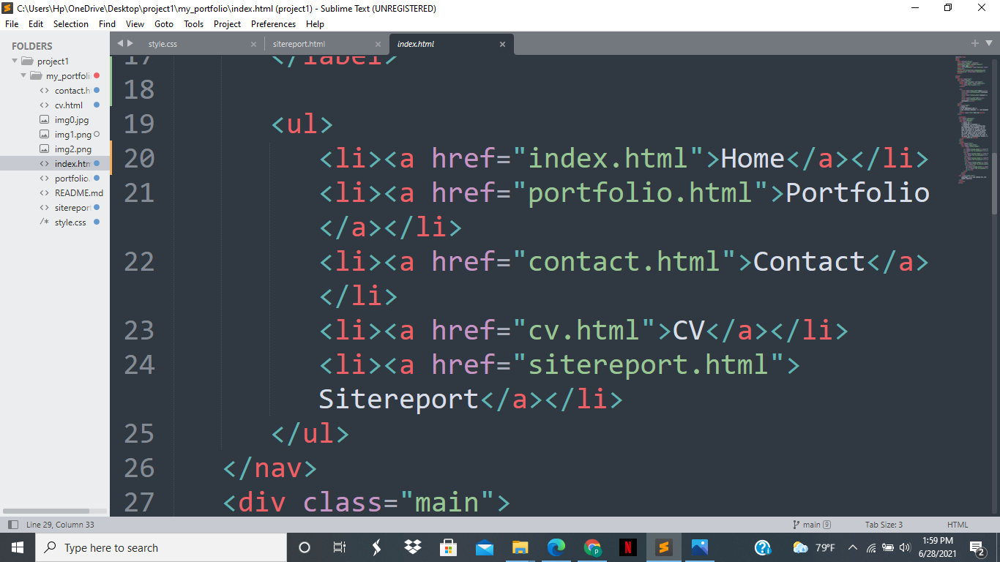

The Sitereport
Summary of this assignment:
This report outlines the development of website using html and css. This report aims to clarify and justify all the decisions made during this process. The decisions have been condensed into functional and visual elements. Inside these terms, the various pages, links and query inclusions are discussed. The use of correct code and designing has also explained. Overall,this report aims to validate all design aspects of the website.
Explaination:
First of all , I have made a repository by name my_portfolio in github to push the codes regulary. After that I have open the sublime text editor to create new pages such as index.html for building home page and style.css for styling the webpage and link both the home page with style page using link below show in the picture:
 

And four other pages are also created for webiste development such as portfolio.html,contact.html, cv.html and sitereport.html and these all pages are also link with each other using tag.